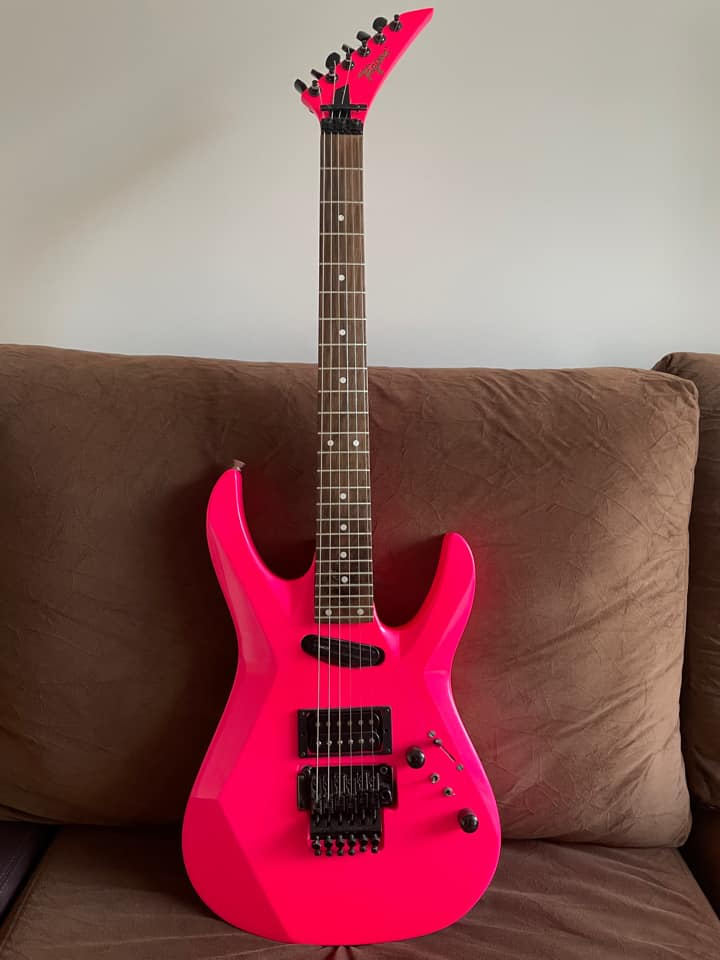

Top 1 - Tagima K1 1993 rosa

Esse foi o 1º modelo signature do Kiko Loureiro, desenvolvido pela tagima por volta de 1993, essa guitarra se tornou lendária pelo fato de ser a guitarra usada nas video aulas em vhs.
| Caracteristicas |
|---|
| Corpo: Cedro |
| Braço: Marfim |
| Escala: Rosewood com marcações em abalone |
| Ponte: floyd rose gotoh |
| Tarrachas: gotoh blindadas |
| Captador ponte: seymour duncan parallel axis humbucke |
| Captador braço: seymour duncan hot rails single coil sized humbucke |
| Tagima k1 |